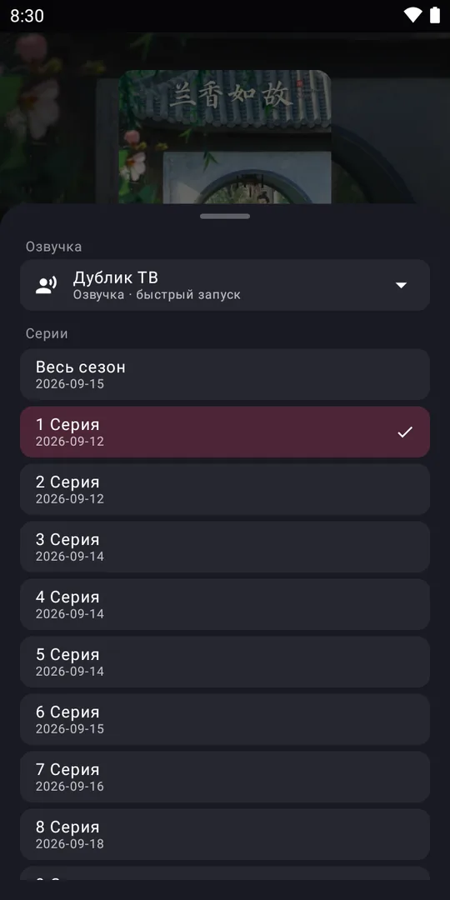
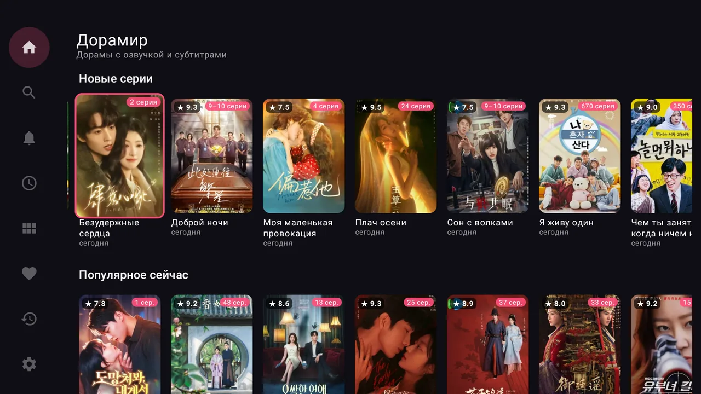
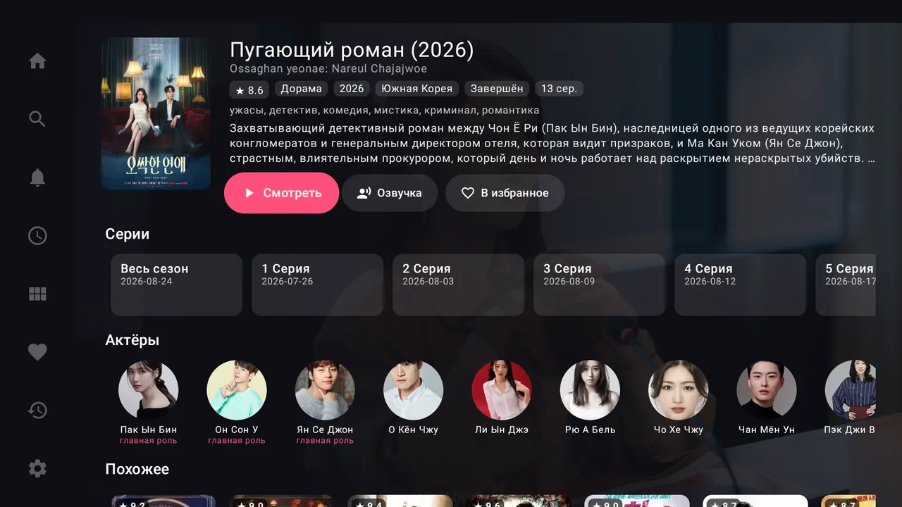
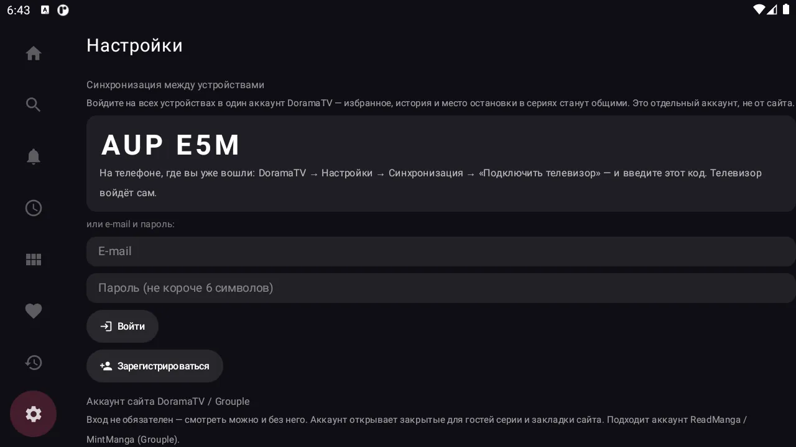

Все дорамы —
в одном приложении
Корейские, китайские, японские и тайские дорамы с озвучкой и субтитрами. На телефоне, телевизоре и компьютере — с общей историей и продолжением с того же места.
Что умеет Дорамир
Сделан для того, чтобы просто включить серию — без рекламы перед видео, поиска плеера и потерянного места остановки.
Озвучки и субтитры
Несколько команд озвучки на выбор. Приложение запоминает вашу озвучку для каждой дорамы.
С того же места
Раздел «Досмотреть» и кнопка «Продолжить» — серия включается там, где вы остановились.
Телефон и телевизор
Один аккаунт на всех устройствах: избранное, история и прогресс общие. На ТВ вход по коду с телефона.
Новые серии
Раздел «Обновления» показывает, где вышли новые серии из вашего избранного.
Удобный каталог
Фильтры по жанрам, странам и годам, поиск, рейтинги, актёры и похожие дорамы.
Свой плеер
Выбор качества, автопереход на следующую серию, жесты на телефоне и управление пультом на ТВ.
Как это выглядит
На телефоне — привычный интерфейс с нижним меню, на телевизоре — крупные карточки и управление пультом.

На телевизоре



Как установить
Дорамира нет в Google Play — приложение ставится из файла. Для телефона и телевизора это один и тот же файл, для компьютера — отдельный установщик.
На телефон или планшет
- Нажмите «Скачать для Android» вверху страницы.
- Откройте скачанный файл doramir.apk — из уведомления или папки «Загрузки».
- Если телефон спросит, разрешите установку из этого источника (браузера) и вернитесь назад.
- Нажмите «Установить». Готово — Дорамир появится среди приложений.
На Android TV и приставку
- Установите на телевизор бесплатное приложение Downloader из Google Play.
- Откройте его и введите адрес:
doramir-app.github.io/download/doramir.apk - Когда файл скачается, разрешите Downloader установку неизвестных приложений и нажмите «Установить».
- Чтобы история с телефона появилась на ТВ: на ТВ откройте «Настройки» → «Войти по коду с телефона».
На компьютер с Windows
- Скачайте установщик Doramir-1.0.0.msi (97 МБ) — для Windows 10 и 11.
- Откройте его. Если Windows покажет «Windows защитила ваш компьютер», нажмите «Подробнее» → «Выполнить в любом случае».
- Права администратора не нужны. Дорамир появится в меню «Пуск» как Doramir.
- Чтобы история с телефона появилась на компьютере: «Настройки» → «По коду с телефона».
Вопросы
Это бесплатно?
Да. Регистрация не нужна — аккаунт понадобится, только если хотите общую историю на нескольких устройствах.
Почему приложения нет в Google Play?
Дорамир — неофициальное приложение, поэтому распространяется напрямую. Скачивайте его только с этого сайта: так вы получите оригинальный файл, а обновления будут ставиться поверх.
Какие устройства поддерживаются?
Телефоны и планшеты на Android 6.0 и новее, телевизоры на Android TV и Google TV, приставки (Mi Box, Chromecast with Google TV и другие), компьютеры на Windows 10 и 11. Версии для iPhone пока нет.
Телефон предупреждает, что приложение может быть опасным
Так Android реагирует на любое приложение не из Google Play. Разрешение нужно дать только браузеру или Downloader, и только для установки. После установки его можно отключить.
Чем версия для Windows отличается?
Всё то же, но на большом экране и с клавиатурой: пробел — пауза, стрелки — перемотка, F — весь экран. Пока на компьютере работают не все плееры: Kodik и некоторые другие доступны только на телефоне и ТВ — в списке озвучек они серые.
Как перенести историю на телевизор?
На телефоне: «Настройки» → «Синхронизация» → зарегистрируйтесь по e-mail. На телевизоре: «Настройки» → «Войти по коду с телефона», затем на телефоне «Подключить телевизор» и введите код с экрана.
Включайте дорамы
Скачайте Дорамир и смотрите на телефоне, телевизоре и компьютере.